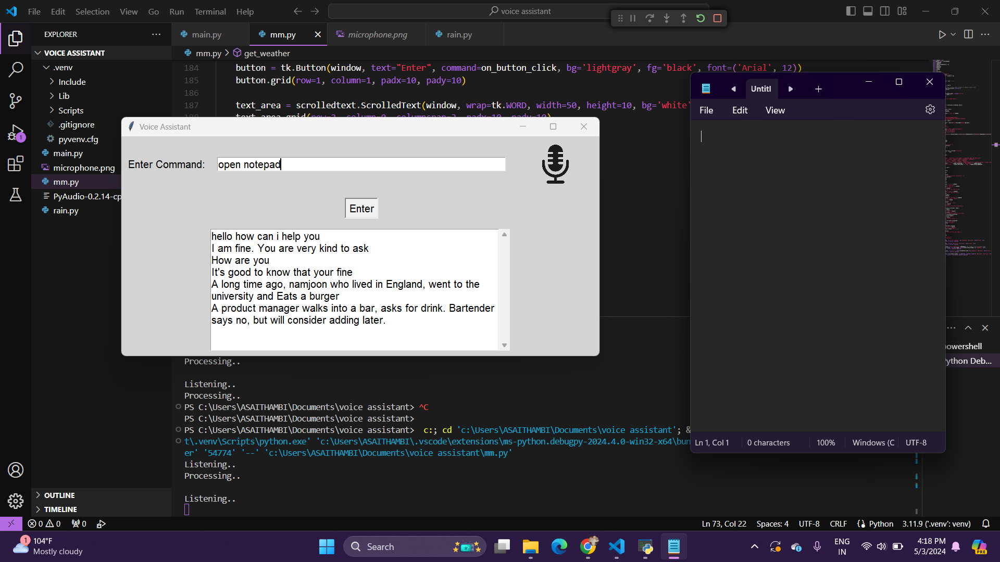

Objective: To create a voice assistant program that can perform various tasks based on user commands, such as providing weather information, playing music, searching the web, telling jokes and stories, managing windows, and more.
Key Components:
Results: Developed a functional voice assistant program with a user-friendly GUI. Integrated various features such as speech recognition, text-to-speech conversion, API integration, web scraping, and window management. Implemented functionality for tasks like weather information retrieval, music playback, web searching, joke and story telling, and window management.
Impact: Provides users with a convenient and interactive way to perform tasks using voice commands. Demonstrates the ability to integrate different libraries and APIs to create a comprehensive application. Showcases proficiency in Python programming and GUI development.
Future Enhancements: Implement more advanced natural language processing (NLP) capabilities for better command understanding. Add support for more tasks and services, such as calendar management, reminders, and email. Improve the GUI design for a more modern and visually appealing interface. Enhance error handling and user feedback for a smoother user experience.